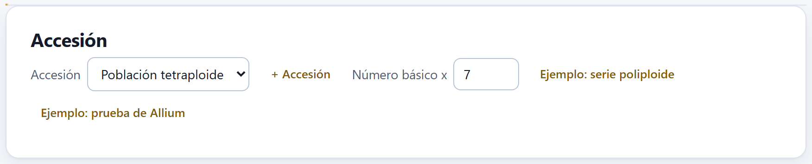
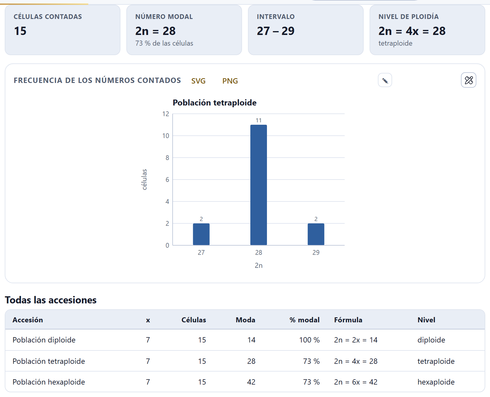
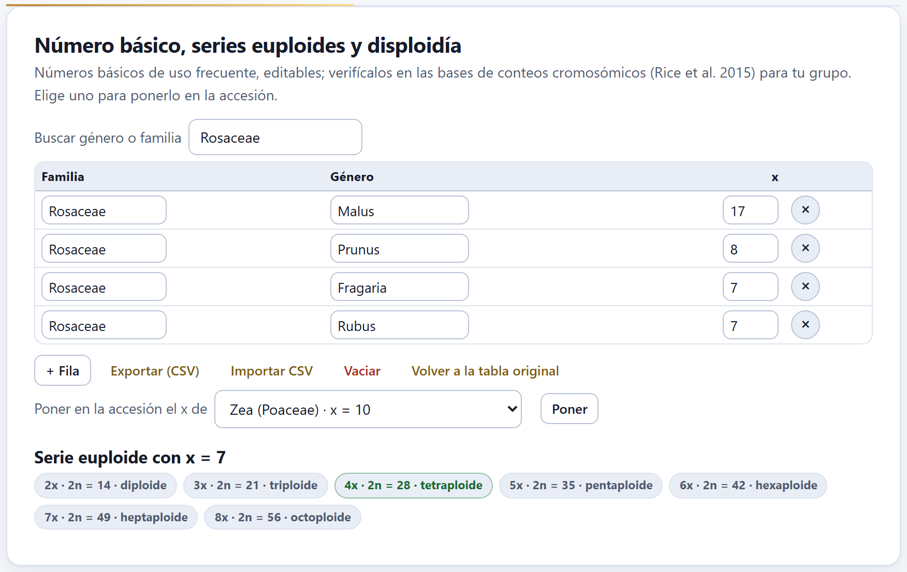
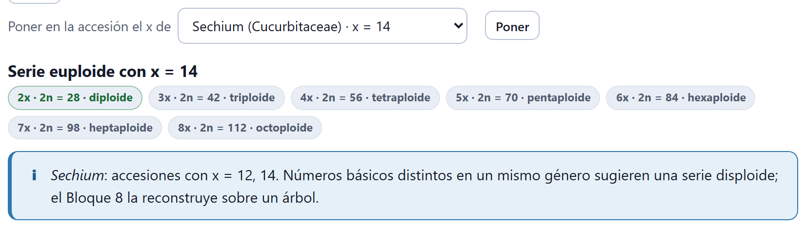
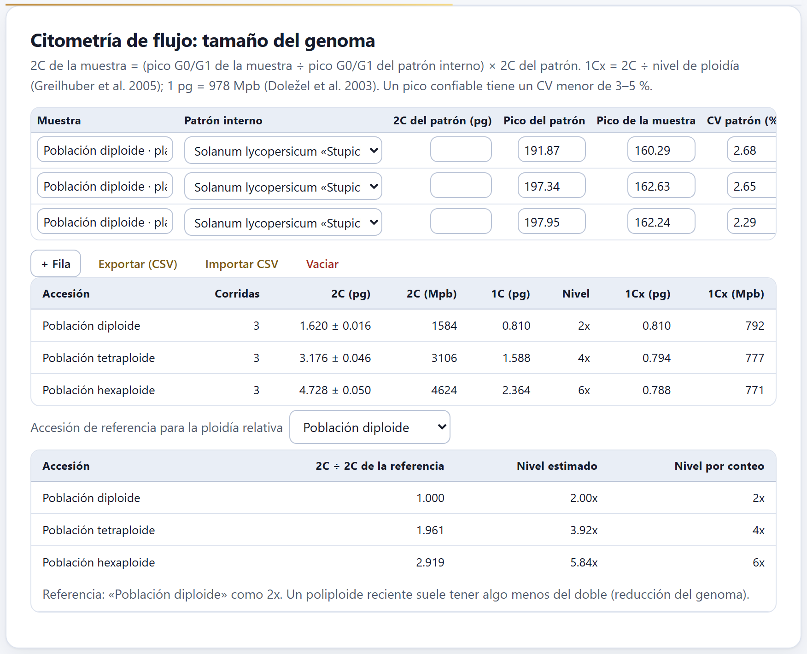
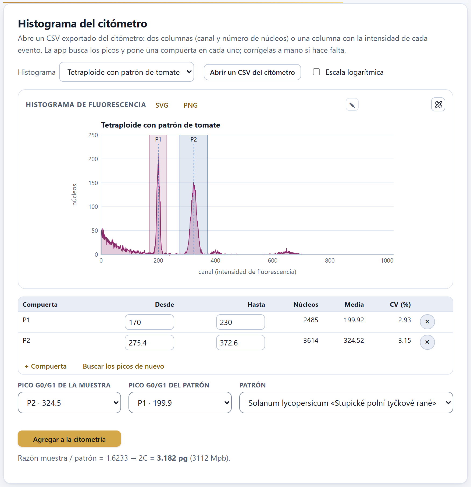
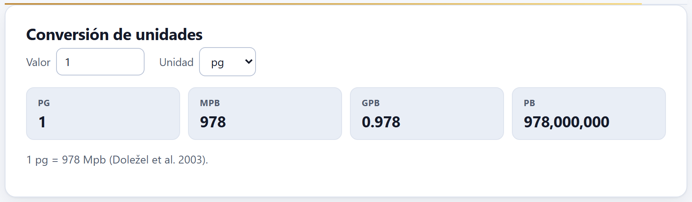
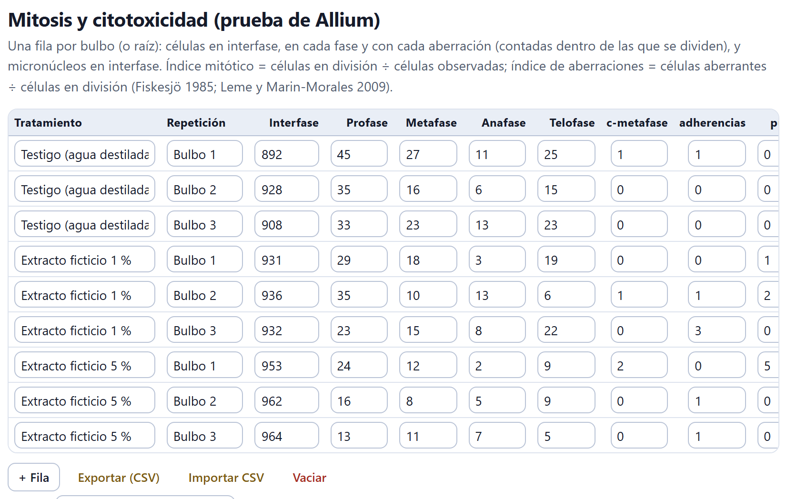
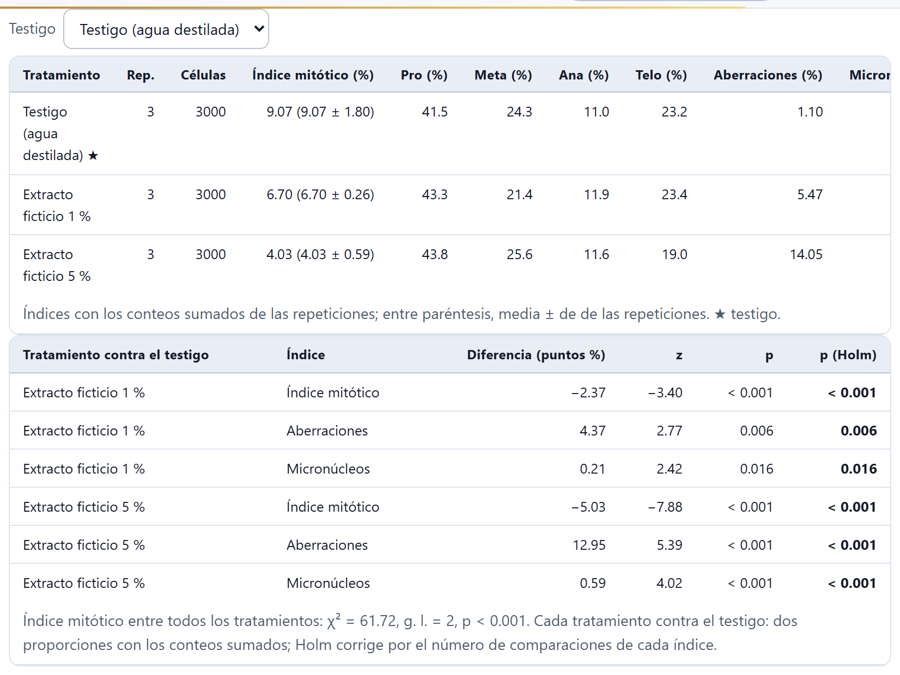
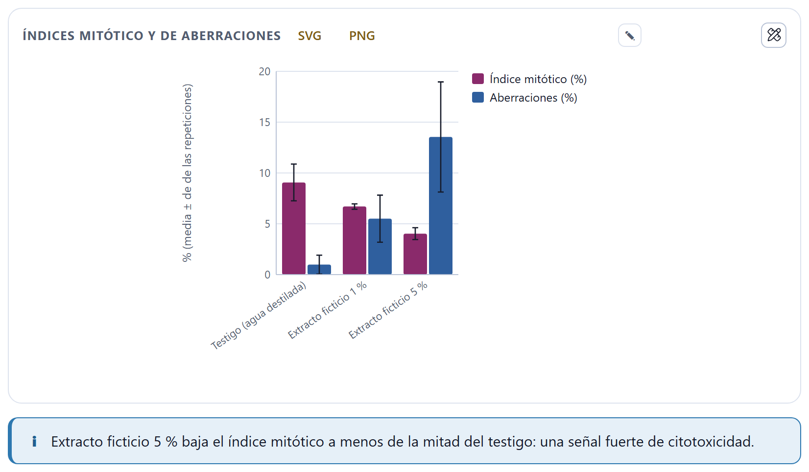

Cuántos cromosomas tiene la planta y cuántos juegos son: los conteos célula por célula con su moda, el nivel de ploidía a partir del número básico, la serie euploide y los indicios de disploidía; el tamaño del genoma por citometría de flujo, leído de la tabla de corridas o del histograma del citómetro; la conversión entre picogramos y pares de bases, y la prueba de Allium, que mide con la mitosis si una sustancia es citotóxica.
El bloque se abre con la tarjeta Accesión, que decide de qué accesión hablan los conteos y la citometría. En ella están el selector Accesión, el botón + Accesión, el campo Número básico x de la accesión elegida y dos botones que abren los ejemplos del bloque: Ejemplo: serie poliploide y Ejemplo: prueba de Allium. Abrir un ejemplo reemplaza el proyecto, y la app lo pregunta antes. Al entrar, el bloque elige la primera accesión que ya tenga conteos o corridas de citometría.

En este capítulo se usan los dos ejemplos del bloque. La serie poliploide es una especie inventada («Especie ficticia A») con tres poblaciones, diploide, tetraploide y hexaploide, de número básico x = 7: trae quince conteos por población, nueve corridas de citometría y el histograma de un tetraploide. La prueba de Allium trae un testigo y dos concentraciones de un extracto ficticio. Los dos son simulados.
El número cromosómico de una planta no se lee en una sola célula: se cuenta en varias metafases y se toma la moda. Las células con otro número casi siempre son preparaciones imperfectas —un cromosoma que se salió de la célula al aplastar, dos que quedaron encimados—, no plantas distintas.
La tarjeta Conteos cromosómicos tiene una tabla con una fila por célula contada y dos columnas: Célula y 2n contado. Como todas las tablas de captura de la app, debajo lleva + Fila, Exportar (CSV), Importar CSV y Vaciar; al importar, la columna del número puede llamarse 2n o n2. La tabla muestra sólo las filas de la accesión elegida. Si contaste con marcas sobre la imagen en el Bloque 2, el botón Llevar el conteo a la ploidía (Bloque 6) de aquel bloque escribe aquí la fila de esa célula.
Debajo de la tabla, cuatro cifras resumen los conteos:
La figura Frecuencia de los números contados dibuja cuántas células tuvieron cada número, del menor al mayor, y se descarga en SVG o PNG o se abre en el estudio de figuras. La tabla Todas las accesiones reúne, para cada accesión con conteos, su x, el número de células, la moda, el % modal, la fórmula y el nivel.

Dos avisos acompañan a los conteos. Si hay más de una moda, la cifra muestra las dos («28 / 30») y la app pide contar más células antes de decidir. Si la moda no es múltiplo de x, la fórmula sale con el sobrante (por ejemplo, 2n = 2x + 1 = 15, con el nombre «trisómico (2n + 1)» cuando el nivel es 2x) y un aviso recuerda las tres explicaciones posibles: aneuploidía, cromosomas B o un número básico distinto.
El nivel es el múltiplo de x más cercano a la moda: k = redondeo(2n / x), y el sobrante es 2n − kx. Si el sobrante es cero, la planta es euploide (2x, 3x, 4x…); si no, es aneuploide y la fórmula lo escribe, 2n = 4x − 1, por ejemplo. Los nombres especiales de la aneuploidía (monosómico, trisómico, nulisómico, tetrasómico) se ponen cuando el nivel es 2x y sobran o faltan uno o dos cromosomas.
El ejemplo del maíz trae doce conteos. Once dan 2n = 20 y uno 19, un cromosoma perdido al aplastar: la moda es 2n = 20 con 92 % de las células, el intervalo 19 – 20 y, con x = 10, el nivel 2n = 2x = 20, diploide. La célula con 19 no cambia la conclusión.
El número básico x es el número de cromosomas de un juego monoploide. Sin él no hay nivel de ploidía, ni 1Cx en la citometría: por eso cada accesión lleva el suyo.
Lo puedes escribir en Número básico x de la tarjeta Accesión o tomarlo de la tarjeta Número básico, series euploides y disploidía, que trae una tabla editable con 55 géneros de uso frecuente (Familia, Género y x). Son valores comunes, no la última palabra: la propia tarjeta pide verificarlos en las bases de conteos cromosómicos para tu grupo (Rice et al. 2015). Buscar género o familia filtra la tabla, que puedes editar, alargar con + Fila o devolver a su estado con Volver a la tabla original.
Debajo, Poner en la accesión el x de ofrece todos los géneros de la tabla; si el taxón de la accesión empieza con uno de ellos, ya viene elegido. Poner escribe ese x en la accesión y recalcula los conteos y la citometría.

La serie euploide lista los niveles de 2x a 8x con su 2n y su nombre, y resalta el de la accesión. Sirve para ver de un vistazo qué números serían esperables en otras poblaciones del mismo taxón.
La disploidía es el cambio del número básico de uno en uno, por fusión o fisión de cromosomas. La app la busca entre las accesiones: si dos o más accesiones de un mismo género (la primera palabra del taxón) tienen números básicos distintos, aparece un aviso con esos valores, y si los pasos son de un cromosoma lo añade.

El aviso sólo compara números; no sabe si x = 12 viene de x = 14 o al revés. En el ejemplo, la accesión silvestre tiene 2n = 24 porque dos pares de la base se fusionaron (disploidía descendente), pero eso lo dicen los datos simulados, no el aviso. La dirección del cambio se infiere con un árbol, en el Bloque 8.
En la citometría de flujo los núcleos teñidos con un fluorocromo que se une al ADN pasan uno a uno frente a un láser; la fluorescencia de cada uno es proporcional a su contenido de ADN. Junto con la muestra se procesa un patrón interno de contenido conocido, y el tamaño del genoma sale de comparar los dos picos.
A partir del 2C, la app calcula el 1C (2C ÷ 2, el contenido del núcleo no replicado de un gameto) y el 1Cx (2C ÷ nivel de ploidía, el contenido de un solo juego monoploide), con los términos de Greilhuber et al. (2005), y los pasa a millones de pares de bases con 1 pg = 978 Mpb (Doležel et al. 2003). El procedimiento de laboratorio está en Doležel et al. (2007).
La tabla de la tarjeta Citometría de flujo: tamaño del genoma lleva una fila por corrida de la accesión elegida:
| Columna | Qué lleva |
|---|---|
| Muestra | El nombre de la corrida (una planta, una repetición). |
| Patrón interno | Ocho patrones de ADN vegetal con su 2C, de Raphanus sativus «Saxa» (1.11 pg) a Allium cepa «Alice» (34.89 pg), o Otro (escribe su 2C). |
| 2C del patrón (pg) | Vacía, usa el 2C del patrón elegido; con un número, ese número manda (y es obligatorio con Otro). |
| Pico del patrón · Pico de la muestra | La posición (canal o intensidad media) del pico G0/G1 de cada uno. |
| CV patrón (%) · CV muestra (%) | El coeficiente de variación de cada pico, que mide su calidad. |
| Razón · 2C (pg) · 2C (Mpb) | Calculadas por la app; la tabla se desplaza a lo ancho para verlas. |
Debajo, una tabla resume las corridas por accesión: Corridas, el 2C medio con su desviación estándar en pg y en Mpb, el 1C, el Nivel y el 1Cx en pg y en Mpb. El nivel sale de la moda de los conteos con el x de la accesión; si la accesión no tiene conteos pero sí una fórmula genómica del Bloque 5 (AA, AAAA, AABBCC…), el nivel es el número de letras.

La última parte es la ploidía relativa. Elige en Accesión de referencia para la ploidía relativa una accesión de nivel conocido; la tabla divide el 2C de cada una entre el de la referencia y multiplica por el nivel de ésta (el de sus conteos, o 2x si no tiene), y pone al lado el Nivel por conteo para compararlos. Es la manera de estimar el nivel de plantas que no se han contado, sólo medido. Hace falta al menos dos accesiones con corridas.
Con la población diploide como referencia, la tetraploide tiene 1.961 veces su 2C y la hexaploide 2.919 veces: niveles estimados de 3.92x y 5.84x, frente a 4x y 6x por conteo. El cociente queda algo por debajo del entero, y por eso el 1Cx baja con el nivel (792, 777 y 771 Mpb). La nota de la tabla lo explica: un poliploide reciente suele tener algo menos del doble, porque pierde ADN después de duplicarse. Una diferencia así no cambia el nivel; una de media unidad (3.5x) sí pediría contar.
La app revisa cada corrida y avisa en tres casos: si algún pico tiene un CV mayor de 5 % (núcleos dañados o restos: hay que repetir la preparación); si la razón está entre 0.85 y 1.18, cuando la muestra y el patrón casi coinciden y sus picos se enciman (hay que elegir un patrón más distinto), y si la muestra y el patrón difieren más de tres veces en su contenido de ADN (razón mayor de 3 o menor de 1/3): tan lejos, la respuesta del citómetro puede dejar de ser lineal, y conviene un patrón de tamaño más cercano al de la muestra (Doležel et al. 2007). Ninguna corrida del ejemplo dispara estos avisos.
En lugar de escribir los picos a mano puedes abrir el histograma que exporta el citómetro: la app encuentra los picos, pone una compuerta en cada uno, mide su media y su CV, y con dos clics lleva la corrida a la tabla de la sección anterior.
Abrir un CSV del citómetro acepta dos formas de archivo (.csv, .tsv o .txt): dos columnas, canal y número de núcleos, que es el histograma ya hecho; o una columna con la intensidad de cada evento, que la app reparte en 512 canales. La primera fila puede ser de títulos. El histograma queda guardado en el proyecto con el nombre del archivo y asociado a la accesión elegida; si abres varios, el selector Histograma cambia entre ellos. Escala logarítmica dibuja el número de núcleos en escala logarítmica, útil para ver los picos pequeños.
La app suaviza el histograma con una media móvil de cinco canales, ignora el 4 % más bajo de la escala (donde se amontonan los restos) y busca máximos locales que cumplan tres condiciones: llegar al menos al 4 % del pico más alto, sobresalir lo suficiente de los valles que los separan de terreno más alto (para no confundir con un pico el ruido de la pendiente de restos) y quedar a no menos del 6 % de la escala de otro pico más alto. Cada compuerta va de la mitad de la distancia a su vecino a la mitad de la distancia al siguiente, sin pasar de ±15 % de la posición del pico.
La tabla de compuertas da, para cada una, Desde y Hasta (que puedes corregir escribiendo), los Núcleos que caen dentro, la Media y el CV (%), ponderados por el número de núcleos de cada canal. El botón × borra una; + Compuerta agrega otra entre el 40 y el 50 % de la escala, para que la muevas a donde haga falta, y Buscar los picos de nuevo descarta las compuertas y las vuelve a calcular.
Debajo se eligen Pico G0/G1 de la muestra, Pico G0/G1 del patrón y Patrón. Por omisión, el patrón es la primera compuerta (la de menor fluorescencia), la muestra la segunda y el patrón interno el tomate. La línea de abajo da la razón y el 2C al momento; Agregar a la citometría escribe una fila nueva en la tabla de la sección 6.3, con los dos picos y sus CV, en la accesión del histograma.

1 2 3 4 5 6 7La app encuentra dos picos. P1, de 170 a 230, tiene 2485 núcleos con media 199.92 y CV 2.93 %; P2, de 275.4 a 372.6, tiene 3614 núcleos con media 324.52 y CV 3.15 %. La razón es 1.6233 y, con el tomate, 2C = 3.182 pg (3112 Mpb), muy cerca del 3.176 pg del resumen de las corridas. Los picos G2 (el doble de cada G0/G1, hacia los canales 400 y 650) se ven apenas: no llegan al 4 % del pico más alto y no reciben compuerta, que es lo que se quiere.
En el ejemplo, la compuerta del patrón da un CV de 2.93 %, algo mayor que el de su pico solo, porque su borde izquierdo recoge la cola de los restos. Si en tus datos pasa lo mismo, angosta la compuerta a mano: el CV que conviene informar es el del pico, no el de los restos que lo acompañan.
El tamaño del genoma se publica en picogramos (pg) o en pares de bases; la tarjeta Conversión de unidades pasa un valor de una unidad a las otras tres.
Escribe el número en Valor y elige su Unidad: pg, Mpb, Gpb o pb. Las cuatro cifras de abajo se actualizan al escribir, con la equivalencia 1 pg = 978 Mpb (Doležel et al. 2003). Por omisión, 1 pg son 978 Mpb, 0.978 Gpb y 978,000,000 pb.

La prueba de Allium mide si una sustancia daña la división celular: se ponen a enraizar bulbos de cebolla en el agua del testigo y en la sustancia, y en las puntas de raíz se cuentan las células que se dividen y las que lo hacen mal (Fiskesjö 1985; Leme y Marin-Morales 2009). Esta tarjeta no depende de la accesión elegida: tiene su propia tabla, por tratamiento.
La tabla de la tarjeta Mitosis y citotoxicidad (prueba de Allium) lleva una fila por bulbo o raíz, con Tratamiento y Repetición, las células en Interfase, Profase, Metafase, Anafase y Telofase, las seis aberraciones (c-metafase, adherencias, puentes, rezagados, fragmentos y husos multipolares, contadas dentro de las células que se dividen), los Micronúcleos en interfase y, al final, el IM (%) de cada fila.

Índice mitótico (IM) = células en división ÷ células observadas × 100: si baja, la sustancia frena la división (citotoxicidad). Índice de fases = células en cada fase ÷ células en división × 100. Índice de aberraciones = células aberrantes ÷ células en división × 100: si sube, la sustancia daña el huso o los cromosomas (genotoxicidad). Micronúcleos, por cada mil células en interfase (‰): restos de cromosomas o fragmentos que quedaron fuera del núcleo.
El selector Testigo dice con qué tratamiento se compara; la app propone el que se llame «testigo», «control» o «agua». La primera tabla de resultados da, por tratamiento, las repeticiones, las células, el índice mitótico, el porcentaje de cada fase, las aberraciones (%) y los micronúcleos (‰). Los índices se calculan con los conteos sumados de las repeticiones y, entre paréntesis, la media ± desviación estándar de las repeticiones; el testigo lleva ★.

La segunda tabla compara cada tratamiento con el testigo en los tres índices: la Diferencia (puntos %), el estadístico z y su p de una prueba de dos proporciones con los conteos sumados, y la p (Holm), corregida por el número de comparaciones de cada índice (Holm 1979), en negritas si es menor de 0.05. Su pie añade una prueba χ² de homogeneidad del índice mitótico entre todos los tratamientos.

Contra el testigo, el índice mitótico baja 2.37 puntos (z = −3.40, p < 0.001), las aberraciones suben 4.37 puntos (z = 2.77, p = 0.006) y los micronúcleos 0.21 puntos, de 0.00 a 2.14‰ (z = 2.42, p = 0.016). Con dos tratamientos por índice, Holm deja esas p iguales porque son las mayores de su índice. Entre los tres tratamientos, el índice mitótico da χ² = 61.72 con 2 grados de libertad, p < 0.001. Es una sustancia citotóxica y genotóxica, más a mayor concentración; sólo la del 5 % pasa del umbral de la mitad del testigo (4.03 frente a 9.07 %).
Las pruebas suman las células de las repeticiones, como si fueran una sola muestra grande. Es lo habitual en la prueba de Allium, pero ignora la variación entre bulbos. Por eso la tabla muestra también la media ± desviación estándar de las repeticiones: si un tratamiento tiene un bulbo muy distinto de los otros, se nota ahí antes que en la p.
| Si el número modal tiene menos de 60 % de las células | entonces cuenta más células antes de dar el número: la cifra se marca como dudosa. |
| Si hay dos modas | entonces no hay número todavía: cuenta más células. |
| Si la moda no es múltiplo de x | entonces piensa en aneuploidía, cromosomas B o un x distinto (disploidía); revisa también el x. |
| Si un pico tiene CV > 5 % | entonces repite la preparación; un pico confiable tiene CV menor de 3–5 %. |
| Si la razón muestra/patrón está entre 0.85 y 1.18 | entonces cambia de patrón: los picos se enciman. |
| Si la razón es mayor de 3 o menor de 1/3 | entonces elige un patrón más cercano: la respuesta del citómetro puede dejar de ser lineal. |
| Si el nivel estimado por citometría difiere del conteo en menos de media unidad | entonces es la reducción del genoma de los poliploides; si difiere más, cuenta cromosomas. |
| Si un tratamiento baja el índice mitótico a menos de la mitad del testigo | entonces es una señal fuerte de citotoxicidad, y la app lo avisa. |
Guías para interpretar, no leyes.
El nivel dice «falta x». La accesión no tiene número básico: escríbelo en la tarjeta Accesión o usa Poner.
La tabla de citometría no calcula el 2C. Falta uno de los dos picos, o elegiste Otro (escribe su 2C) sin escribir el 2C del patrón.
No aparece la ploidía relativa. Hace falta que al menos dos accesiones tengan corridas.
«No se encontraron números en el archivo». El CSV no tiene columnas numéricas; revisa el separador o quita las líneas de encabezado largas que exportan algunos equipos.
La app encuentra un pico de más o de menos. Corrige las compuertas a mano, bórralas con × o agrega una con + Compuerta; Buscar los picos de nuevo vuelve al cálculo automático.
La prueba de Allium compara contra el tratamiento equivocado. Elige el correcto en Testigo.